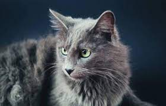

|  |
| Nebelung/ |
BEHAVIOR
The Nebelung is gentle and curious. This cat breed enjoys playing with his family, and loves to race around the house and climb furniture. It is a graceful and sleek cat that is emotionally in- touch with his human family. These cats are extremely sensitive, and do well with gentle children and family. Interactive cat toys and a game of Fetch will always keep this breed happy. The Nebelung is a quiet cat breed that is usually reserved around strangers. This cat breed does well with positive clicker training. That said, this cat breed loves an active family, and does well living indoors or outdoors, as long as he is well taken of.
GROOMING
Nebelung may be susceptible to skin diseases originating from flea bites, mites, yeast infections, and infections. Opt for natural cat grooming products to help resolve these skin irritants.
This cat breed needs daily grooming to remove shedding or dead hair. Because this breed has a medium-length double coat that is silky and soft, grooming is easy. It just needs to be done every day to prevent matting.
HEALTH PROBLEMS
The Nebelung is a very healthy and moderately active cat breed that may be susceptible to the following health conditions:
- Calcium Oxalate Bladder Stones: Small amounts of calcium oxalate is always present in a cat’s urine. When presented in high amounts, this will pose a problem. Oxalate bladder stones will generally affect one out of two cats in the same household, though both will be eating the same feed. Genetic predisposition may partially contribute to cats being prone to getting bladder stones, although diet and environmental conditions have been considered important contributing factors as well. Consult with your veterinarian for advice.
- Ringworm: This is an infection of the skin, hair, or claws, and is caused by a fungus called dermatophyte. This occurs in 98% of cats. It spreads easily from cats to people. Symptoms include circular, bald patches that scale and have broken hairs in a ring-like fashion. Consult with your veterinarian for advice.
- Skin Disorders: The Nebelung may be prone to skin disorders. This cat breed is prone to idiopathic seborrhea. This is an inherited skin disorder resulting in the overproduction of an oily substance. This clumps in the cat’s fur, and causes it to smell bad. Symptoms include red and irritated skin with excessive scratching. Consult your veterinarian for advice.
NUTRITION
The Nebelung cat breed will need a high-quality diet. That said, a high-quality diet that is appropriate for the specific life stage of the cat is necessary. Protein as an ingredient, needs to come first. Dry cat food is a popular choice because it promotes healthier gums and teeth. Yet wet food is more often recommended by veterinarians because it provides more moisture to cats.